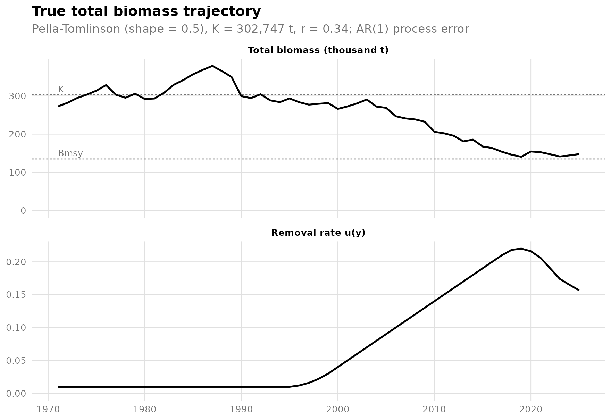
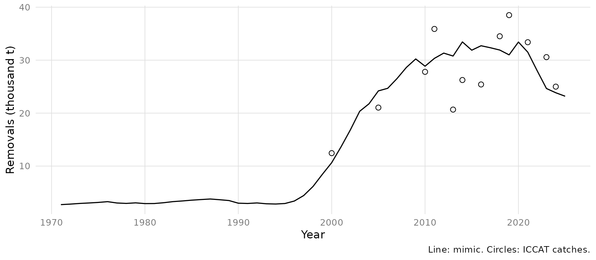
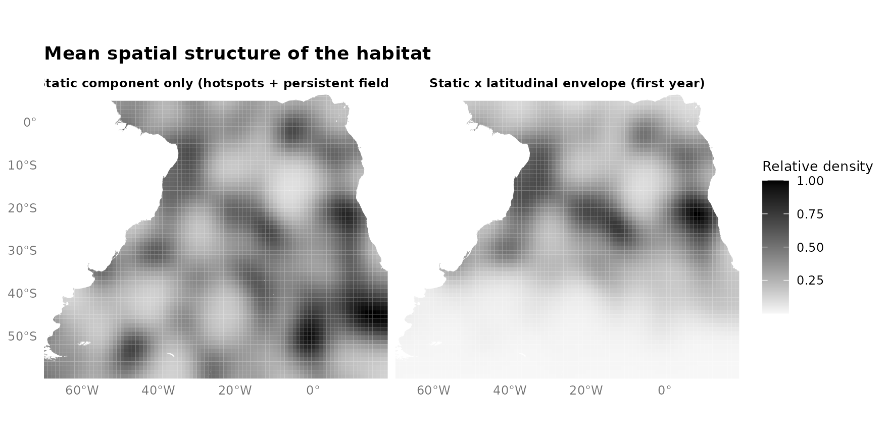
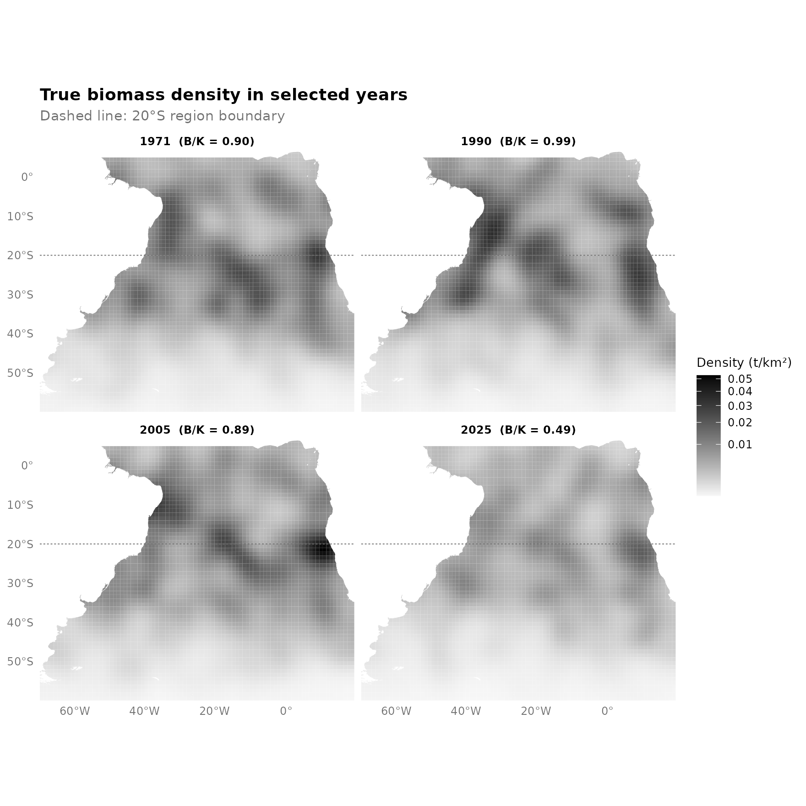
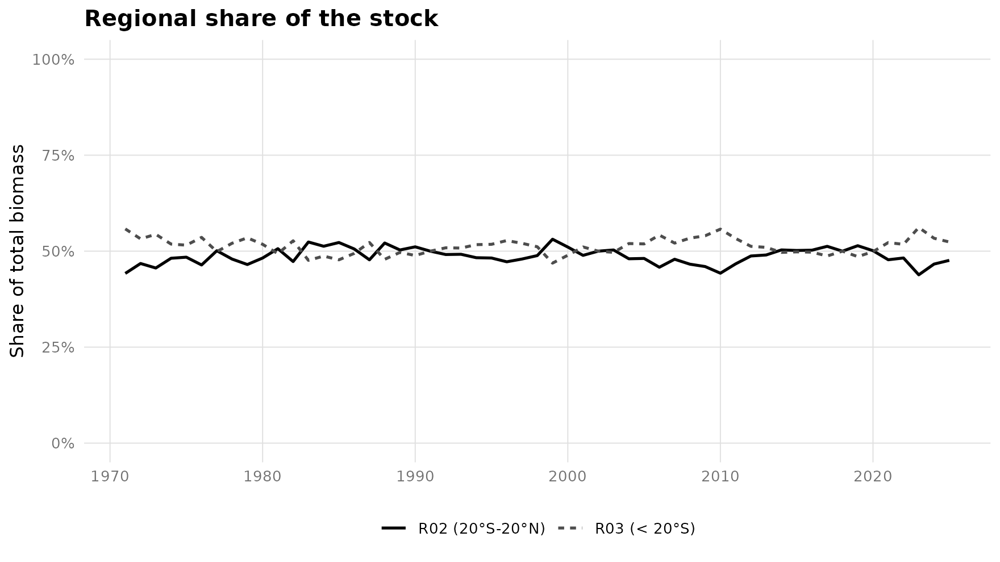
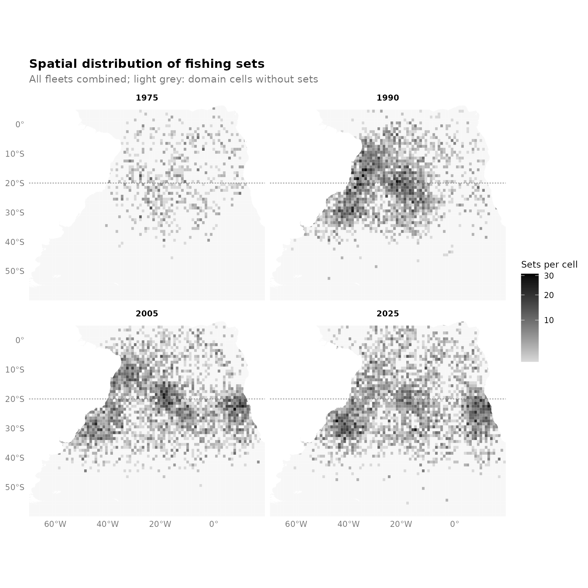
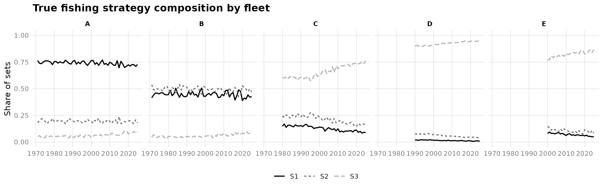
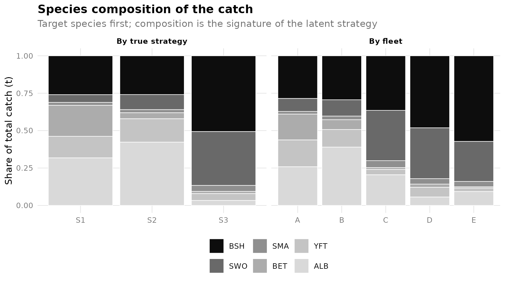
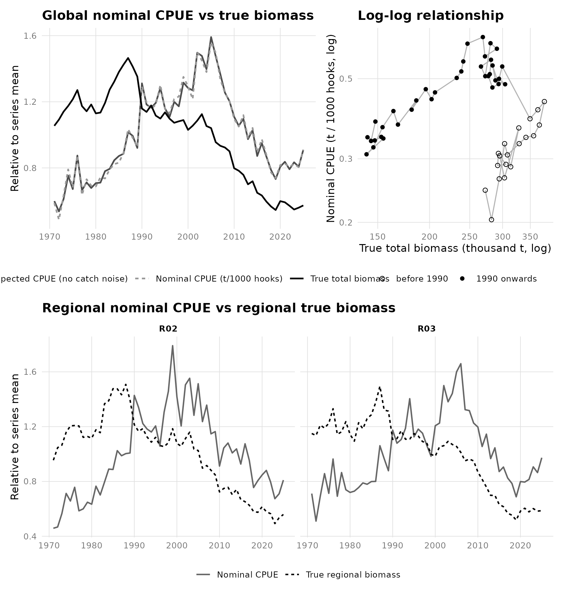
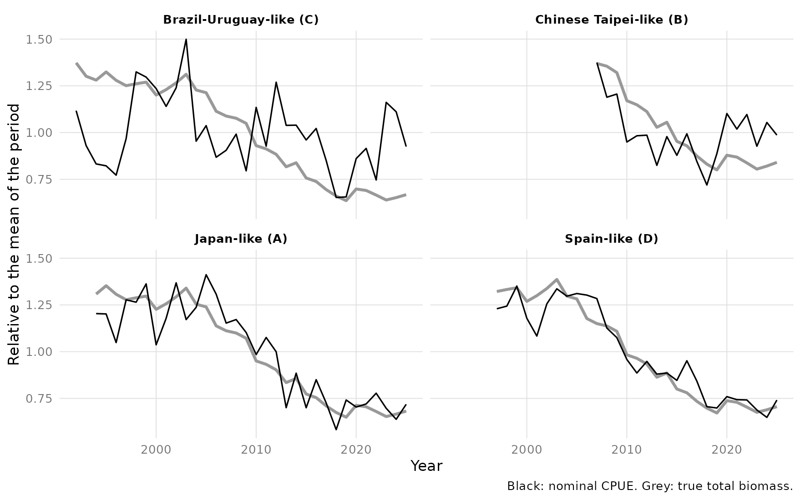

A mimic of the South Atlantic blue shark
Source:vignettes/articles/mimic-bsh-south.Rmd
mimic-bsh-south.RmdThis article builds an operating model shaped after the South Atlantic blue shark (Prionace glauca, BSH-S) stock as assessed by ICCAT in 2023. The aim is a test bed for CPUE standardisation methods whose truth looks like BSH-S: its area, productivity, history of exploitation, and the kind of longline fleets that catch it. It is not an assessment. The numbers taken from ICCAT documents are listed with their source; the others are assumptions of this example and are flagged as such.
The model uses only configuration: the same functions as the BET preset, with other values.
What is mimicked
| Component | BSH-S mimic | Source |
|---|---|---|
| Stock area | Atlantic south of 5°N, Mediterranean excluded | ICCAT stock structure (see below) |
| Period | 1971-2025 | Start of the 2023 assessment catch series |
| Production model | Pella-Tomlinson, K = 302,747 t, r = 0.335, BMSY/K = 0.447, B1971/K = 0.90 | JABBA reference case, 2023 assessment |
| Removals | Removal rate fitted to the ICCAT catches of 2000-2024 | ICCAT executive summary (Table 2) |
| Distribution | Broad, with high density off southern Brazil-Uruguay, off Namibia-South Africa and in the eastern tropical Atlantic | Coelho et al. (2018) |
| Fleets | Five longline archetypes: distant-water deep sets (two), south-western coastal, surface longline, south-eastern | Main flags of the BSH-S catch |
| Targeting | Shallow sets catch more blue shark; the share of shallow sets grows after 1995 | Assessment reports (targeting proxies in the CPUE models) |
| HBF, hooks per set | HBF of the BET preset; hooks per set assumed | No fleet values found |
1. Spatial domain
ICCAT manages a northern and a southern blue shark stock, separated
at 5°N, and the Mediterranean is a separate unit. The ICCAT GIS
GeoPackage has no blue shark layer, but the swordfish South Atlantic
area (SWO-S) uses the same 5°N line and excludes the
Mediterranean, so its cells are used.
The regions are the default ones of the package. The stock area has no cells north of 20°N, so R01 is dropped and two regions remain: R02 (5°N-20°S) and R03 (south of 20°S).
dom <- om_domain_iccat("SWO-S")
#> regions without cells in this domain (dropped): R01
#> domain SWO-S: 4550 cells | lattice 67 x 90
dom
#> <pelagicOM spatial domain> SWO-S (iccat)
#> 4550 cells | lattice 67 x 90 | lon -69.7 to 19.5 | lat -59.5 to 6.2
#> regions: R02 = 1386, R03 = 3164
#> total area: 44,155,981 km2 | geometry: yes2. Population
The 2023 JABBA reference case is a Pella-Tomlinson model with shape m = 1.517. In the parameterisation of the package, the shape is m - 1 = 0.517, which gives the same BMSY/K (0.447) and the same FMSY = r / m = 0.221.
The removal rate is low until 1997, rises until 2019 and then falls, as the catches fell after the peak of 2019 and the TAC of Rec. 23-11. The values were chosen so that the implied removals (u x B) follow the ICCAT catches of 2000-2024. The removals before 2000 (about 3,000 t per year) are an assumption of this example.
bcfg <- om_biomass_config("BET_ICCAT",
general = list(label = "bsh_s", seed = 20261122),
temporal = list(year_start = 1971, year_end = 2025),
spatial = list(stock_code = "SWO-S"),
population = list(K = 302747, r = 0.335, shape = 0.517, B0_frac = 0.90,
u_base = 0.01,
decline = list(start = 1997, end = 2019, u_peak = 0.23),
recovery = list(start = 2020, end = 2024, u_end = 0.15)),
habitat = list(
envelope_type = "latitude",
lat_center = -20, lat_sd_north = 18, lat_sd_south = 12,
hotspots = list(
## off southern Brazil and Uruguay (south-western nursery)
list(lon = -47, lat = -33, sd_lon = 6, sd_lat = 4, amp = 0.7),
## off Namibia and South Africa (south-eastern nursery)
list(lon = 12, lat = -28, sd_lon = 5, sd_lat = 6, amp = 0.7),
## eastern tropical Atlantic (adults)
list(lon = 2, lat = -3, sd_lon = 9, sd_lat = 5, amp = 0.5))),
shift = list(enabled = FALSE),
output = list(map_years = c(1971, 1990, 2005, 2025)))
reference_points(bcfg$population)[c("Bmsy", "MSY", "umsy")]
#> $Bmsy
#> [1] 135210.7
#>
#> $MSY
#> [1] 29858.66
#>
#> $umsy
#> [1] 0.2208306
sim <- simulate_biomass(bcfg, verbose = FALSE)
sim
#> <pelagicOM biomass truth> label 'bsh_s' | seed 20261122
#> 4550 cells x 55 years (1971-2025) | stock area SWO-S
#> B_total: 272,472 t (1971) -> 148,049 t (2025) | B/K 0.90 -> 0.49 | Bmsy 135,211 t
#> regional share: R02 0.44 -> 0.48 | R03 0.56 -> 0.52
fig_total_biomass(sim)
The implied removals against the catches of the ICCAT executive summary (landings plus discards, Table 2):
iccat <- data.frame(Year = c(2000, 2005, 2010, 2011, 2013, 2014, 2016,
2018, 2019, 2021, 2023, 2024),
ICCAT = c(12448, 21046, 27799, 35898, 20672, 26253,
25417, 34514, 38508, 33391, 30576, 25003))
pop <- sim$pop
iccat$Mimic <- round(pop$u[match(iccat$Year, pop$Year)] *
pop$B_total[match(iccat$Year, pop$Year)])
knitr::kable(iccat, format.args = list(big.mark = ","))| Year | ICCAT | Mimic |
|---|---|---|
| 2,000 | 12,448 | 10,645 |
| 2,005 | 21,046 | 24,200 |
| 2,010 | 27,799 | 28,863 |
| 2,011 | 35,898 | 30,341 |
| 2,013 | 20,672 | 30,785 |
| 2,014 | 26,253 | 33,447 |
| 2,016 | 25,417 | 32,727 |
| 2,018 | 34,514 | 31,914 |
| 2,019 | 38,508 | 31,007 |
| 2,021 | 33,391 | 31,518 |
| 2,023 | 30,576 | 24,653 |
| 2,024 | 25,003 | 23,849 |
ggplot(data.frame(Year = pop$Year, C = pop$u * pop$B_total), aes(Year, C / 1e3)) +
geom_line() +
geom_point(data = iccat, aes(Year, ICCAT / 1e3), shape = 1, size = 2) +
labs(y = "Removals (thousand t)",
caption = "Line: mimic. Circles: ICCAT catches.") +
theme_pub()
The mimic smooths the year-to-year changes of the catches (removal rates are a moving average) and does not reach the peak of 2019. Its stock status in 2021 falls inside the uncertainty ranges of the 2023 assessment:
rp <- attr(pop, "ref")
y21 <- pop$Year == 2021
data.frame(quantity = c("B2021/BMSY", "F2021/FMSY"),
mimic = round(c(pop$B_total[y21] / rp$Bmsy,
pop$u[y21] / rp$umsy), 2),
assessment_2023 = c("1.29 (0.89-1.81)", "1.03 (0.45-1.55)"))
#> quantity mimic assessment_2023
#> 1 B2021/BMSY 1.13 1.29 (0.89-1.81)
#> 2 F2021/FMSY 0.93 1.03 (0.45-1.55)3. Spatial distribution
Coelho et al. (2018) describe nursery areas in the temperate south-west (off southern Brazil and Uruguay) and south-east (off Namibia and South Africa), and more adults in the equatorial and tropical eastern Atlantic. The model has no size or sex structure, so the three areas are hotspots of total density on a broad latitudinal envelope centred at 20°S. No shift of the distribution has been documented, so the redistribution is switched off: the maps change only through the spatio-temporal noise.
fig_base_habitat(sim)
fig_maps(sim)
fig_region_share(sim)
4. Fleets
Most of the BSH-S catch is taken by longline. In 2019-2023 the main flags were EU-Spain (about 40-48% of the catch), EU-Portugal (15-20%), Brazil (7-12%), Namibia (4-12%), Japan (3-9%) and Chinese Taipei (1-5%). The mimic represents them with five archetypes. The archetypes are not the national fleets: their sizes, start years, centres and hooks per set are assumptions of this example.
| Fleet | Archetype | Start | Main strategy |
|---|---|---|---|
| A | distant-water deep-set tuna longline (Japan-like) | 1971 | S1 (deep) |
| B | distant-water longline, albacore and tropical tunas (Chinese Taipei-like) | 1971 | S1/S2 |
| C | south-western coastal longline (Brazil-Uruguay-like) | 1980 | S3 (shallow) |
| D | surface longline for swordfish and sharks (EU-Spain/Portugal-like) | 1990 | S3 |
| E | south-eastern longline (Namibia-South Africa-like) | 2000 | S3 |
Blue shark is caught mostly in shallow sets. The catchability
therefore falls with depth: the strategy effects are lower for the deep
(S1) and intermediate (S2) strategies, and the HBF effect is negative.
The shallow strategy (S3) becomes more frequent after 1995, as shark
catches gained value and some fleets moved towards them. The HBF by
strategy is the one of the BET preset, because no fleet-level HBF values
were found. The base catchability q0 is four times that of
the BET preset: the density of blue shark (t/km²) is lower than that of
BET in the preset, and blue shark should be caught in most shallow
sets.
fleets <- list(
A = om_fleet(n_vessels = 8, year_start = 1971, regions = c("R02", "R03"),
core_lon = -10, core_lat = -10, core_sd = 18,
hooks_median = c("1971" = 2500, "2025" = 3000),
strategy_comp = c(S1 = 0.75, S2 = 0.20, S3 = 0.05)),
B = om_fleet(n_vessels = 6, year_start = 1971, regions = c("R02", "R03"),
core_lon = -20, core_lat = -28, core_sd = 15,
hooks_median = c("1971" = 2500, "2025" = 3000),
strategy_comp = c(S1 = 0.45, S2 = 0.50, S3 = 0.05)),
C = om_fleet(n_vessels = 15, year_start = 1980, regions = c("R02", "R03"),
core_lon = -45, core_lat = -30, core_sd = 8,
hooks_median = c("1980" = 1000, "2025" = 1300),
strategy_comp = c(S1 = 0.15, S2 = 0.25, S3 = 0.60)),
D = om_fleet(n_vessels = 45, year_start = 1990, regions = c("R02", "R03"),
core_lon = -20, core_lat = -20, core_sd = 18,
hooks_median = c("1990" = 1200, "2025" = 1600),
strategy_comp = c(S1 = 0.02, S2 = 0.08, S3 = 0.90)),
E = om_fleet(n_vessels = 12, year_start = 2000, regions = c("R02", "R03"),
core_lon = 12, core_lat = -28, core_sd = 6,
hooks_median = c("2000" = 1100, "2025" = 1400),
strategy_comp = c(S1 = 0.10, S2 = 0.15, S3 = 0.75)))The companion species give each strategy its catch signature: swordfish and shortfin mako in shallow sets, bigeye in deep sets, albacore in the intermediate ones. Their parameters are illustrative and their trends are flat.
flat <- c("1971" = 1, "2025" = 1)
fcfg <- om_fishery_config("BET_ICCAT",
general = list(label = "bsh_s"),
temporal = list(year_start = 1971, year_end = 2025),
output = list(map_years = c(1975, 1990, 2005, 2025)),
fleets = fleets,
effort = list(hooks_range = c(600, 3500)),
strategies = list(drift_level = "S3",
drift_S1_odds = c("1971" = 1, "1995" = 1, "2025" = 2)),
catchability = list(q0 = 0.04,
strategy_effect = c(S1 = -0.9, S2 = -0.5, S3 = 0),
hbf = list(effect = -0.8, ref = 6),
region_effect = c(R02 = 0, R03 = 0)),
species = list(
target = "BSH",
companions = c("SWO", "SMA", "BET", "YFT", "ALB"),
params = list(
BSH = NULL,
SWO = list(trend = flat), YFT = list(trend = flat),
ALB = list(trend = flat),
SMA = list(ref = 0.06,
strategy_effect = c(S1 = -0.9, S2 = -0.5, S3 = 0),
hbf_effect = -0.5, lat_center = 25, lat_sd = 12,
use_abs_lat = TRUE, trend = flat),
BET = list(ref = 0.30,
strategy_effect = c(S1 = 0, S2 = -0.7, S3 = -1.6),
hbf_effect = 0.6, lat_center = 0, lat_sd = 12,
use_abs_lat = FALSE, trend = flat))))
#> om_config_update(): new element(s) added: species$params$SMA, species$params$BET5. Observation process and scenarios
Logbook data on blue shark were poor before the 1990s: shark catches
and discards were under-reported in tuna longline logbooks, and
retention and reporting of blue shark started in the early 1990s in the
south-western fleets. The temporal observation profile
degrades the records of 1971-1993, the years before the first CPUE
series used in the 2023 assessment. Five scenario data sets are
generated:
base_obs <- om_fishery_config("BET_ICCAT")$observation
fcfg$observation <- list(
complete = list(modifyList(base_obs$complete[[1]],
list(period = c(1971, 2025)))),
temporal = list(modifyList(base_obs$temporal[[1]],
list(period = c(1971, 1993))),
modifyList(base_obs$temporal[[2]],
list(period = c(1994, 2025)))))
sc <- function(name, regions, drop, observation, objective)
list(name = name, regions = regions, drop = drop,
observation = observation, objective = objective)
fcfg$scenarios <- list(
sc("01_global_complete", c("R02", "R03"), character(0), "complete",
"Reference: whole stock area, all variables"),
sc("02_global_without_hbf", c("R02", "R03"), "HooksBetweenFloats",
"complete", "No HBF: targeting must be inferred"),
sc("03_R02_complete", "R02", character(0), "complete",
"Tropical region (5N-20S)"),
sc("04_R03_complete", "R03", character(0), "complete",
"Temperate region (south of 20S)"),
sc("05_global_temporal_uncertainty", c("R02", "R03"), character(0),
"temporal", "Degraded logbooks before 1994"))
fcfg <- validate_fishery_config(fcfg)6. Fishery simulation
fish <- simulate_fishery(sim, fcfg, verbose = FALSE)
fish
#> <pelagicOM fishery truth> label 'bsh_s'
#> 293,734 sets | 25,512 trips | 226 vessels | 5 fleets | 1971-2025
#> target catch: total 214,479 t | mean 0.730 t/set | zeros 32.7%
#> sets by fleet x region:
#>
#> R02 R03
#> A 23745 14748
#> B 9726 18858
#> C 5013 54103
#> D 68857 71615
#> E 2648 24421
scen <- generate_scenarios(fish, verbose = FALSE)
scen
#> <pelagicOM scenario data sets> 5 data sets
#> 01_global_complete 293734 sets R02+R03 complete
#> 02_global_without_hbf 293734 sets R02+R03 complete
#> 03_R02_complete 109989 sets R02 complete
#> 04_R03_complete 183745 sets R03 complete
#> 05_global_temporal_uncertainty 284469 sets R02+R03 temporalShare of the simulated blue shark catch by fleet in 2019-2023:
d <- fish$data[fish$data$Year %in% 2019:2023, ]
share <- tapply(d$TrueCatch, d$Fleet, sum)
round(share / sum(share), 2)
#> A B C D E
#> 0.08 0.09 0.11 0.57 0.15
fig_effort_maps(fish)
fig_strategy(fish)
fig_species_composition(fish)
fig_cpue_vs_biomass(fish)
7. Index-like series
The 2023 assessment used longline CPUE series of Spain (1997-2021), Japan (1994-2021), Chinese Taipei (2007-2022) and Brazil-Uruguay (1992-2022). The same periods can be cut from the archetypes. Their nominal CPUE, compared with the true biomass, shows what a standardisation has to remove: targeting, the change of HBF, the creep and where each fleet fishes.
periods <- data.frame(Fleet = c("D", "A", "B", "C"),
like = c("Spain-like (D)", "Japan-like (A)",
"Chinese Taipei-like (B)",
"Brazil-Uruguay-like (C)"),
from = c(1997, 1994, 2007, 1992))
cp <- cpue_biomass_table(fish$data, fish$truth, "Fleet")
cp <- merge(cp, periods, by.x = "level", by.y = "Fleet")
cp <- cp[cp$Year >= cp$from, ]
cp <- do.call(rbind, lapply(split(cp, cp$level), function(x) {
x$CPUE <- x$RawCPUE / mean(x$RawCPUE)
x$Biomass <- x$B_total / mean(x$B_total)
x
}))
ggplot(cp, aes(Year)) +
geom_line(aes(y = Biomass), colour = "grey60", linewidth = 1) +
geom_line(aes(y = CPUE)) +
facet_wrap(~like) +
labs(y = "Relative to the mean of the period",
caption = "Black: nominal CPUE. Grey: true total biomass.") +
theme_pub()
What the mimic leaves out
- Size and sex structure. The nurseries and the segregation of sexes only shape the total density; there are no juveniles or adults.
- Under-reporting of catches. The observation profiles add noise, rounding, missing values and lost records, but not a bias: under-reported shark catches and discards in tuna logbooks, the change in the shark reporting ratio of the Japanese logbooks in 2006/07, or the unusual 2020 data of the Chinese Taipei fleet are not reproduced.
- Stock mixing. The northern stock and the Mediterranean are not modelled, and no fish crosses 5°N.
- The catch is not tied to the fleets. The removals come from the removal rate of the population model, while the fleets are a sample of sets. Their catch shares (above) are therefore only roughly like the ICCAT shares.
References
- ICCAT. Executive summary: blue shark (BSH), SCRS report. https://www.iccat.int/Documents/SCRS/ExecSum/BSH_ENG.pdf
- ICCAT (2023). Report of the 2023 ICCAT blue shark stock assessment meeting. Collect. Vol. Sci. Pap. ICCAT 80(4): 379-. https://www.iccat.int/Documents/CVSP/CV080_2023/n_4/CV080040379.pdf
- ICCAT (2023). Report of the 2023 ICCAT blue shark data preparatory meeting. https://iccat.int/Documents/SCRS/DetRep/BSH_DP_ENG.pdf
- ICCAT Recommendation 23-11 on South Atlantic blue shark. https://www.iccat.int/Documents/Recs/compendiopdf-e/2023-11-e.pdf
- Coelho, R. et al. (2018). Distribution patterns and population structure of the blue shark (Prionace glauca) in the Atlantic and Indian Oceans. Fish and Fisheries 19: 90-106. https://doi.org/10.1111/faf.12238